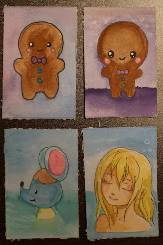
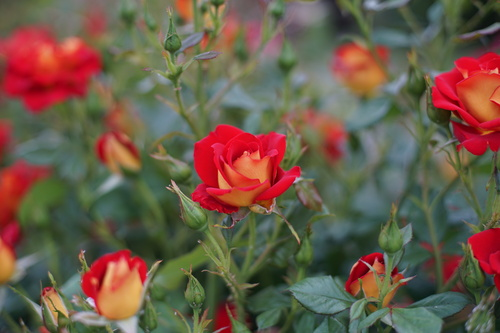
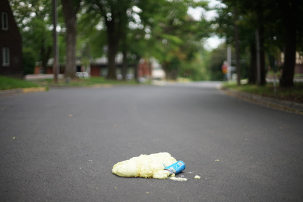
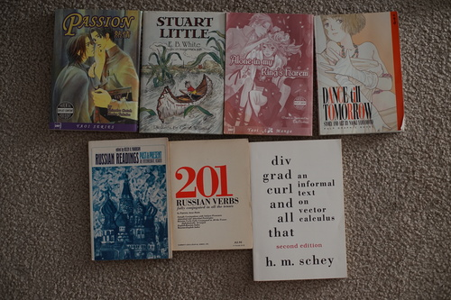
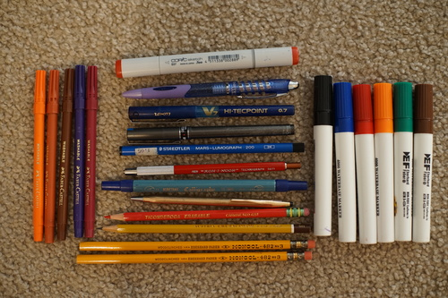

I came up with this new idea! I'm going to start producing NFTs (Nice Fran Tokens)! They are payable by check or money order and will be shipped to you via USPS! Don't forget to include shipping the cost of shipping in these trying times. I heard forever stamps are going up again ;a;
Here's the drawing I did for Ryan's birthday! His request was "Klara wearing sunglasses". I don't know that our little Klara would obscure her view of the Sun, but I drew it anyway! I didn't realize colored pencils were so messy. My desk ended up getting covered in colorful wax.
there's a store that sells art downtown that has a basket for "art trade". i saw it a while ago and kept thinking i should draw something to put in it, but kept putting it off! so i decided to do it last night. i tried out the proart watercolors i shoved in a palette and drew button, super deformed button, broccolo, and girl at onsen.
i kinda liked them all too much so this morning i tried again! i drew a plumeria and painted it! then ryan and i walked all the way down to the shop and... the basket wasnt out!! what do i do with it now...
I washed out the palette my gouache paints were on, and I found the palette was very stained! No wonder I was seeing stains on my unoa faceplate after I cleaned it off for her last faceup. So I'm going to put a hint here that Artsmith cheap*ss gouache paints are no good for BJD faceups!
the other day i went on a walk since it was cloudy outside and decided to visit BOTH thrift stores in town! and also visit some flowers. its hot enough they're all starting to look bad but there were a few pretty ones still out
 a can of expanding foam must have gotten squished in the middle of the road. good thing there were no cars passing by while i took photos of it!
some books! I made ryan buy me yaoi... can you believe it?! im nervous to see what illicit things lie inside. i may have to hide them and forget i own them. there were a ton of sex books at the thrift store and idk if they should have been out for the kids to run into. 100 lesbian sex positions?!
for my mom!
good smell, unused but no lid
For Ryan. Has a few styluses inside that I stole from his gift.
i havent read this one since high school but i guess ill be skipping the last chapter when i reread it.
For Ryan. Cool 70s cover!
I think she forgot to charge me for this one. It would have been like 10 cents though. I've been looking for one to use to fix all the broken book bindings I have.
For Ryan!
Hina will hopefully get a summer dress or two made from these!
I liked the cover so much that I bought it for Ryan even though he has it already.
The thrift store I dont usually go to has a bunch of baggies of free pens and pencils. Since they're all free I sit and pick and choose! Last time I was there I only took a container of mechanical pencil lead but it was really good this time. Here are some highlights from my Free Pen Find:
I seriously couldn't believe I found a copic and a vintage cross pen. The lead holder is really cool too. I've never used one or even thought about it though. What are the benefits of a lead holder? I have no idea!
I was really curious about "Eberhard Faber" so I did some googling. Turns out Eberhard Faber, Faber-Castell, and Staedtler are all in cahoots. We should have known!!